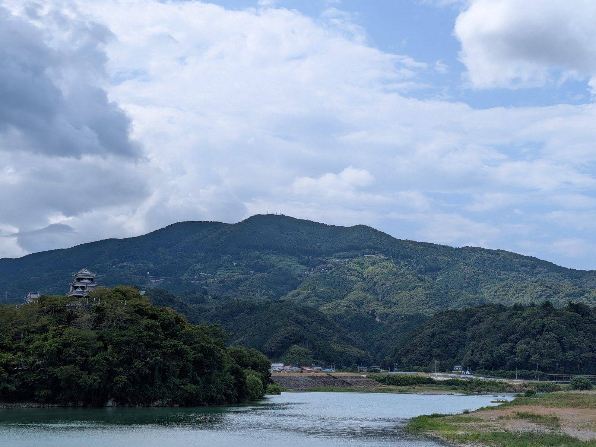

大洲のいま ・ 出典: 一般社団法人キタ・マネジメント ・ 約6分で読める
大洲市、“世界の持続可能な観光地”銀賞を受賞していた

 メモう
メモう
大洲が、世界の観光地を選ぶ賞で銀賞をとってるの知ってた?
四国では初めてなんだ。あと少しで金だったんだって。メモう！
3行でいうと調べた資料 6本
- 大洲市が2024年、世界の持続可能な観光地アワードでシルバー(四国初)を受賞
- 84項目の審査で達成率76%。あと4ポイントでゴールドという位置
- その前年には「文化・伝統保全」部門で世界1位も取っている
大洲市が、オランダの認証機関から観光地としての賞をもらっている。
2024年９月23日、「世界の持続可能な観光地アワード」のシルバーアワード。四国では初めての受賞だ。
「持続可能な観光地」と言われても、正直ぴんとこなかった。何を、どうやって審査したのか。
点数はいくつだったのか。そのあと数字は動いたのか。順に調べてみた。
そもそも何を測っている賞なのか
主催しているのはグリーン・デスティネーションズという、オランダに拠点を置く国際認証団体だ。
持続可能な観光の国際標準をつくるGSTC（グローバル・サステナブル・ツーリズム協議会）から認定を受けている。
審査は84項目の基準に照らして行われ、達成率に応じてランクが決まる。
- ブロンズアワード: 60％以上70％未満
- シルバーアワード: 70％以上80％未満
- ゴールドアワード: 80％以上90％未満
- プラチナアワード: 90％以上100％未満
- 全項目を満たすと、GSTC認証そのものの対象になる
環境や景観だけの話ではない。地域経済への還元、文化財の保全、住民の合意形成、災害リスク管理といった項目まで含めて84個ある。
「観光でどれだけ稼いだか」ではなく「その観光をこの先も続けられるか」を測るものだと理解した。
大洲市の点数は76％だった
ここが一番知りたかったところで、市の発表にちゃんと書いてあった。
大洲市は76％の評価を受け、シルバーアワードを獲得した。
シルバーは70％以上80％未満なので、76％は帯の中では上のほうにあたる。
そしてあと４ポイントでゴールドの領域だ。「銀賞」と聞くと余裕のある２位のように響くが、実際は境界線に近いところに立っている。
84項目のうち残り２割弱、数にして約20項目が未達だった計算になる。
実はその前に「世界１位」も取っていた
調べていて驚いたのが、シルバーアワードより前に、もっと分かりやすい賞を取っていたことだ。
2023年３月８日、ドイツ・ベルリンで開かれた国際ツーリズムマーケット展（ITBベルリン）。
ここで発表された「ザ グリーンデスティネーションズ ストーリーアワード」で、大洲市は「Culture & Tradition（文化・伝統保全）」部門の世界１位に選ばれている。
このアワードは、「世界の持続可能な観光地100選」に選ばれた地域の中から、特に優れた取り組みを６部門に分けて表彰するものだ。
評価されたのは「町家・古民家等の歴史的資源を活用した観光まちづくり」。そして市の発表によれば、日本国内では初の世界１位だった。
整理すると、賞は性格の違う２つがある。2023年のストーリーアワードは「１つの取り組みの中身」を競うもので、大洲は世界一を取った。
2024年のシルバーアワードは「地域全体の総合力」を84項目で採点したもので、76％だった。
突出した１点があり、全体では７割台。こう並べると、賞の意味が急に分かりやすくなる。
日本には、ほかにどこがあるのか
「四国初」と言われても、そもそも日本に何地域あるのか分からないと比較にならない。ここも確認した。
国内でシルバー以上を得ているのは、大洲市のほかに北海道ニセコ町（2023年）、香川県小豆島、岐阜県高山市など。
いずれも大洲市と同じシルバーで、市の発表でも横並びの事例として挙げられている。
その上に岩手県釜石市がいる。釜石市は2024年にシルバーからゴールドへ昇格していて、国内では抜けた位置にある。近年では鹿児島県与論町や香川県丸亀市も受賞地に加わった。
つまり大洲市は「日本で唯一」ではなく、ニセコ・高山・小豆島と同じ帯にいて、釜石を追いかける位置にある。
四国での先陣を切ったのは事実だが、全国で見れば競り合っている段階だ。
次はゴールドを狙っている
あと４ポイントという状況で、市が何をしているかも調べた。観光まちづくり戦略会議の中間報告に、そのものずばり「ゴールドランク取得に向けた取組み」というページがある。
書かれている内容はこうだ。
- 2026年度の申請に向けて、市とキタ・マネジメントの職員によるサステナブルチームを編成し、定例会を実施
- GSTCのサステナブル・ツーリズム試験（STTP試験）を受験し、「GSTC Professional Certificate in Sustainable Tourism」を１名が取得
- 大洲市の関連部署へのヒアリングを実施
- 前回の申請内容は英語で書かれていたため、和訳して庁内に配付
- 四国ツーリズム創造機構やせとうちＤＭＯの会議・研修に参加
最後から２つ目が地味に効いていると思う。前回の申請は英語で提出され、その内容を市の職員が読めていなかったということだからだ。
84項目のうち何が足りないのかを庁内で共有するには、まず日本語にするところから始めないといけない。
ゴールドまでの４ポイントは、こういう作業の積み重ねで詰めていくものらしい。
賞を取ったあと、数字はどう動いたのか
インバウンドの宿泊者だけは、はっきり跳ねた。キタ・マネジメントの令和７年度実績報告に、市の宿泊統計が年度別で載っている。
令和４年度の142人から、令和７年度は5,263人。３年で約37倍になっている。
目標が2,000人だったので、達成率は263％。ここだけ見れば大成功だ。
ただ、同じ表の他の行を見ると、話はそう単純ではない。
その一方で、国内の宿泊者は減っている
宿泊者数の全体はこうなっている。令和２年度62,663人 → 令和７年度118,013人。５年で倍近くまで戻した。
ところが、実績報告は「宿泊者数14万人を目指していたが、目標に対し84％程度に留まり、目標達成には至らなかった」と書いている。前年度からの伸びもわずか0.5％だ。
内訳を割ると理由が見える。国内の宿泊者は令和６年度の115,068人から令和７年度は112,750人へ、2.0％減っている。
インバウンドが約2,900人増えた裏で、国内客が約2,300人減った。
全体がほぼ横ばいなのは、増えた分と減った分がほぼ相殺されているからだった。
そして未達の主因として書かれているのが、需要ではなく供給の話だった。
市内の宿泊施設にヒアリングした結果として、「労働者確保が困難で、すべての部屋を運営出来ていないことが増加していない主因として考えられる」とある。泊まりたい人が来ないのではなく、部屋を開けられていない。
これは、84項目のうちどれかに引っかかっていてもおかしくない論点だと思う。
持続可能な観光地の基準には、観光が地域の雇用や暮らしにどう還るかという観点が含まれている。
人が足りなくて部屋を閉めている状態は、賞のロゴでは解決しない。
調べてみて、思ったこと
観光消費額のほうは伸びている。令和５年度2,403百万円 → 令和６年度3,328百万円 → 令和７年度3,379百万円。
再生した歴史的建造物は31棟から35棟、進出した事業者は26から37事業者に増えた。
城下町再生そのものは、数字の上でも動いている（この全体像は戦略会議の中間報告の記事にまとめた）。
そのうえで、この賞をどう受け止めるかだ。「世界１位」も「シルバー」も、大洲がすでに完成しているという証明ではない。
むしろ、84項目という他人のものさしを持ち込んだことで、自分たちに何が足りないかが番号つきで見えるようになった、というのが実際の効用なんだと思う。
申請書を和訳して庁内に配る、という地味な作業がゴールドへの第一歩になっている。
76％という数字は、褒め言葉というより、残り24％のリストなんだろう。
出典・参考にした資料
「世界の持続可能な観光地アワード」シルバーアワードを受賞しました（大洲市、2024年10月10日更新） 「世界の持続可能な観光地」文化・伝統保全部門で世界１位を獲得しました（大洲市、2023年３月13日更新） 大洲市観光まちづくり戦略会議 第13回会議資料（令和７年度中間報告、全57ページ、ＰＤＦ） 令和７年度実績報告（一般社団法人キタ・マネジメント、ＰＤＦ） 四国初！大洲市が「世界の持続可能な観光地アワード」にてシルバーアワードを受賞しました（一般社団法人キタ・マネジメント） アワード、認証（Green Destinations Japan）この記事をサイトに掲載した日: 2026/08/18